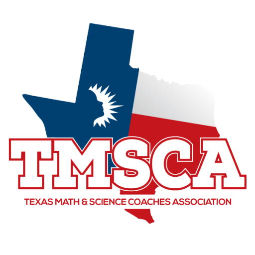
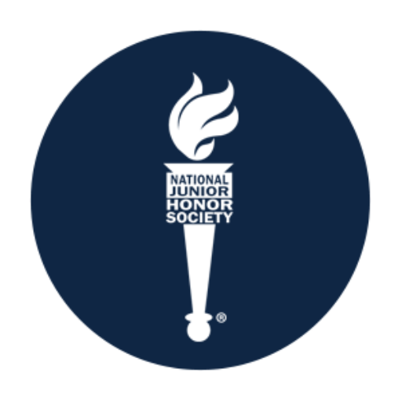
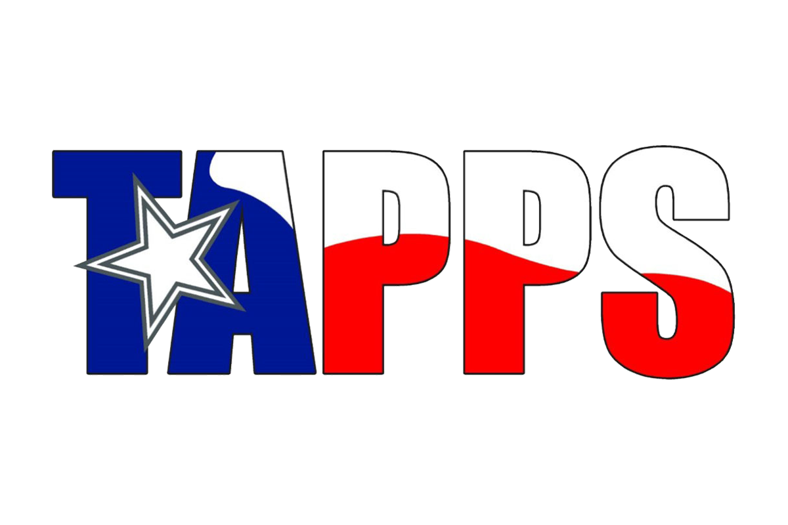
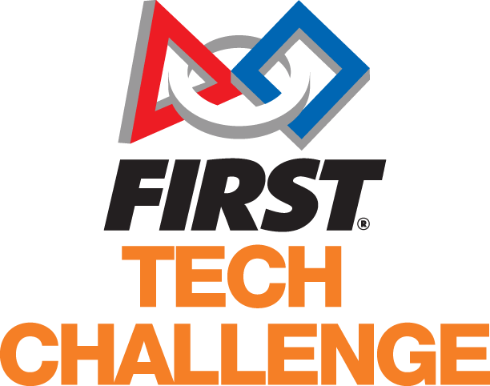

I am currently a sophomore attending the Village School and I plan to pursue the IB and CS diplomas, although I don't really know what specific major I plan to pursue (so far I have thought of CS, something in AI, or aerospace engineering), my interests in engineering and maths indicate that these 2 diplomas will likely help me the most out of what Village curently provides.
I started attending Village during pre-kindergarden in 2015, and I have attended Village ever since.
Throughout my time at Village, my main accomplishments reisde in:

TMSCA is a set of competitions throughout the year where schools around Texas, both public and private, compete in 4 sections:
These competitions increase in difficulty and eventually culminate to the state competition and tests, where it really matters.
My main achievements involved getting a perfect score in the state competition on the calculator section for the 2 consecutive years that I took this competition in middle school.
TMSCA taught me many test-taking skills, especially when being under pressure.
The NJHS is an organization in many schools where students host many service events that would benefit the community, whether small or big. Members of NJHS also provide help with other service events that they didn't initialize as well.
I was the treasurer of NJHS, where I managed both the economics and the service hours of all members of the organization.
Being the treasurer of NJHS taught me many skills in organization and spreadsheets, applying to many aspects of high school to this day.


TAPPS is a competition of many non-public schools across Texas that spans many topics, including:
I was able to secure 3rd place in calculator, 2nd place in general math, and 7th place in science. Although these might not be as interesting as TMSCA, the tests were much harder than what middle school TMSCA had to offer.
To be honest, TAPPS didn't teach me much that TMSCA didn't
FTC is a robotics competition where many teams of different background and sizes gather to compete in a predetermined game that they prepared for.
I was the leader of my team during the 2025-26 season and we unfortunately didn't make it to the regional compeititons. Although I did volunteer to partiicipate as a field manager for the regional compeition, assisting in field management between games.
Unlike the events listed below, my experience in FTC taught me many leadership and communication skills which makes managing much easier in school.

Right now, I still follow the CS diploma with plans to take IB classes starting junior year. My main goal is to keep my weigted GPA above a 100 in a 100-point scale.
By the time I'm making this website, I have applied for many honor societies and started making connections with clubs that will help me with the CS diploma.
I plan to contribute to many honor societies and participate in more compeitions in both CS and math, such as TAPPS, FTC, FRC(harder FTC), AMC, and USACO.
As said before, I plan to participate in the IB diploma and complete the CS diploma in the process, which will give me a big component when applying for colleges.
I have yet to finalize my decision on what major I plan to go to, mainly I have considered Computer Science and Aerospace Engineering, nevertheless, out of what Village provides, the CS diploma helps the most for these majors.
I would like to apply for UC Berkeley, UC Stanford, CalTech, and MIT as my main big colleges, but that could change if I choose to go for Aerospace Engineering or any other major.